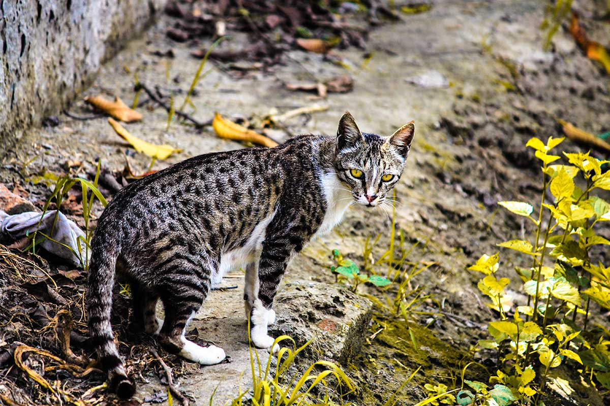

Found Cat Action Plan

These tips should also work for birds, bunnies, reptiles and other small pets.
If you have found a cat, please assume it is somebody's missing pet. Even if the cat looks uncared for, this doesn't mean he isn't loved and missed.
Cats hide when they are scared, often for a week or more. Most cat owners don't know this, so when they don't find their cat after a few days, they think the cat is gone for good. Many cats are found weeks or months later - when they finally come out of hiding, their owner has given up hope and stopped searching.
A cat in this situation will often look dirty and skinny, and will act fearful. This doesn't mean the cat is feral. Many cats are naturally shy around strangers. Being lost and on the run can turn even the friendliest house pet into a fearful, almost wild animal.
If the cat is hurt, it may have happened while he/she was lost. Even if you see a cat being dumped, that person may not be the owner. Cats are sometimes stolen and dumped, or trapped by unfriendly neighbors. Always think LOST, not stray.
How to find the owners of a found cat (or other pet):
- Check the pet for ID. This can be tags, a tattoo or a phone number written inside the collar. Birds may have a numbered band on the leg, and horses or other livestock may have a brand.
- Have the cat scanned for a microchip. Most vets will do this for free. This goes for any animal, not just cats. Birds, reptiles and horses can also be microchipped.
- Check a 1-2 mile radius for LOST flyers. If you don't see any, this doesn't mean the prt is unwanted. The cat may have been lost for a while and the owner has given up hope, or he/she may have accidentally hitched a ride in a delivery van or car and ended up miles from home. Check back every few days in case they do post flyers.
- Post large neon posters with FOUND info on them. Be general (Found Grey Tabby Cat for example). Anyone claiming the pet should be able to provide you with photos or other proof of ownership.
- Knock on doors - neighbors may recognize the pet. This is especially important for cats, who rarely travel far from home.
- Post a FOUND ad on Craigslist Lost & Found section, and search the Lost & Found and Pets sections for missing cats.
- Report the found pet to the animal control agency that serves that area. Leave a flyer at the shelter, and check any lost listings at the shelter.
- Take flyers to local groomers, pets shops, vets, etc.
- Fill out a Lost/Found Pet Form with us and we will share the cat's photo and info on our Facebook page.
- When you find the owner, ask for proof of ownership. Photos, vet records, or if they can describe a unique marking or habit that their pet has.
Hopefully your hard work will pay off and you'll get to be part of a happy reunion!